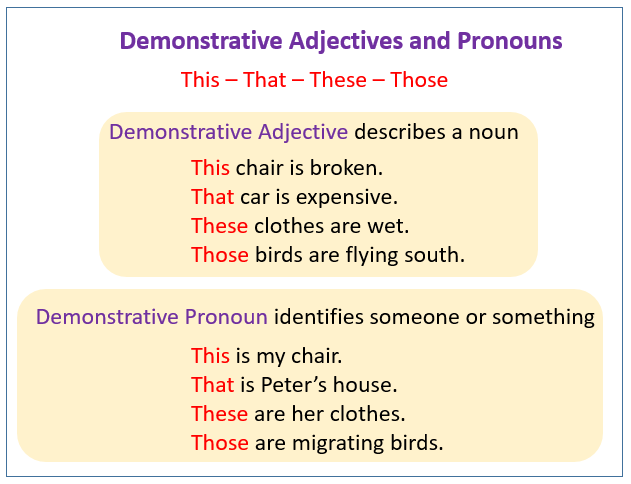
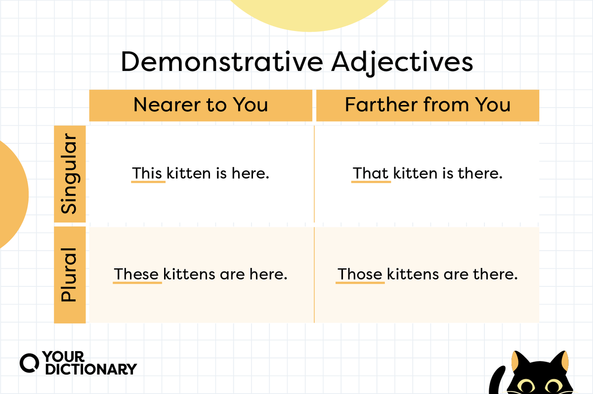
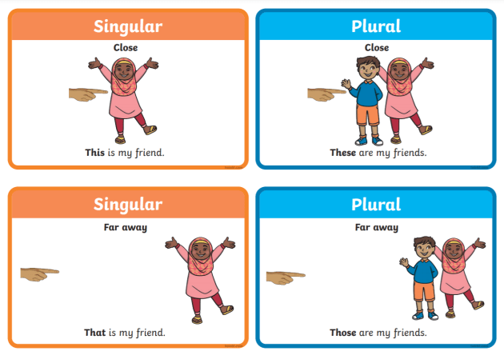

Demonstratives
Demonstratives are words like "this", "that", "these"and "those" that help us to understand which person or object is being spoken about. We have two main types of demonstratives: demonstrative adjectives and demonstrative pronouns.
Image taken from: OnlineMathLearning.com
As you can see in the image above, the main difference between the two is that demonstrative adjectives are used as adjectives to describe a noun, and demonstrative pronouns are used in place of regular pronouns. Let's have a closer look at demonstrative adjectives.
Image taken from: yourdictionary.com
Pretty straight forward right? Except in Japanese, there are two options for things further away. However, luckily
there is no distinction between singular and plural, so we really only have three basic variations - この、その and
あの.
In the right column of images in the picture below, you can see that この is used in the same way as "this", when it
is near to the speaker. その is being used for things further away, that are close to the listener. And あの is being
used for things that are far from both the speaker and the listener. In the left column, you can see a similar
pattern, but generally things not within reach but still considered relatively close would use その and anything
further away would use あの.
Image taken from: nihongonokobeya.com
Now, let's examine demonstrative pronouns. First of all, let's remember that pronouns are nouns used to make it easier
to be clear about subjects and objects of our sentences, without unnecessary wordiness. For example, let's look at the
following paragraph:
"Esmerelda went to the shops to buy some supplies. While she was there, she also bought herself an ice-cream.
But as she was leaving, she tripped and dropped it. Luckily, the staff there were nice and gave her a new
one."
Without pronouns, this paragraph would be:
"Esmerelda went to the shops to buy some supplies. While Esmerelda was at the shops, Esmerelda also bought
Esmerelda an ice-cream. But as Esmerelda was leaving, Esmerelda tripped and dropped the ice-cream. Luckily,
the staff at the ice-cream store were nice and gave Esmerelda a new ice-cream."
You get the idea. We would very quickly tire of having to say and repeat the same information over and over.
Particularly with such a long name like Esmerelda. The table below summarises some common English pronouns that we use
with people. But, as you can see in the above paragraphs, we also have pronouns that can be used with objects (eg: it,
them, they, one) and places (eg: here, there) and there's even relative pronouns (eg: who, that, which, when,
where) which are the ones used with relative clauses (eg: "I'll talk to my teacher who might know what to
do.", "My laptop is the one which has a big sticker on it." etc.)
Image taken from: Vocab Videos
So now that we understand what pronouns are, we can have a better understanding of a demonstrative pronoun. A demonstrative pronoun is defined as a pronoun that points to a specific noun or pronoun the audience already knows about. The most common ones are "this", "that", "these" and "those". For example, the image below shows how these four words are used with people. But we can also use these words with things (eg: "This is my dog") and concepts (eg: "Those are interesting ideas.").
Image taken from: twinkl.co
Note about using demonstratives in Japanese:
Remember the rule that if you are using a demonstrative adjective, you must follow it immediately with some kind noun
of what you are describing. If you are using a demonstrative pronoun, it will be used on it's own in front of a
particle (usually は or が, but could be で if you want to say something like "with ~" (eg:
「それで、おわりましょう。」>> "With that, let's finish up." )
Summary Table of Demonstratives
Customise Columns
| English | Hiragana | Demonstrative Type | Notes |
|---|---|---|---|
| that | それ | Pronoun | |
| that [noun] | その[noun] | Adjective | |
| that [noun] (over there) | あの[noun] | Adjective | |
| that kind of [noun] | そういう[noun] | Adjective | Common phrase: そういうこと ("that kind of thing") |
| that one (between two or more choices) | そちろ・そっち | Pronoun | |
| that one over there | あれ | Pronoun | |
| that one over there (when specifying between two or more options) | あちら・あっち | Pronoun | |
| this | これ | Pronoun | |
| this [noun] | この[noun] | Adjective | |
| this kind of [noun] | こういう[noun] | Adjective | Somewhat common phrase: こういうこと("this kind of thing") |
| this one (between 2 or more choices) | こちら・こっち | Pronoun |